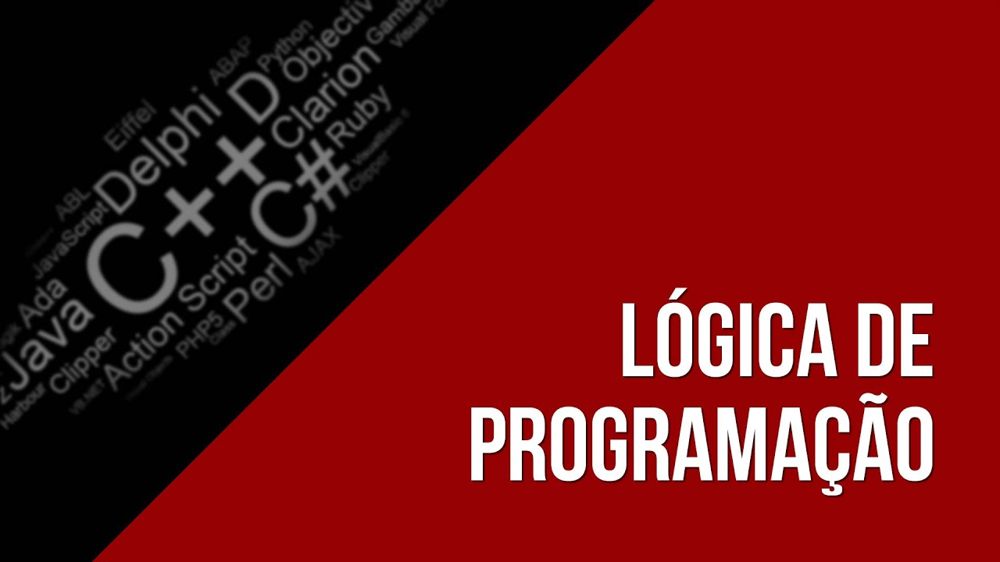

Lógica de Programação com C++
O C++ foi inicialmente desenvolvido por Bjarne Stroustrup dos Bell Labs, durante a década de 1980 com o objetivo implementar uma versão distribuída do núcleo Unix.[4] Como o Unix era escrito em C, deveria-se manter a compatibilidade, ainda que adicionando novos recursos. Alguns dos desafios incluíam simular a infraestrutura da comunicação entre processos num sistema distribuído ou de memória compartilhada e escrever drivers para tal sistema. Stroustrup percebeu que a linguagem Simula 67 possuía características bastante úteis para o desenvolvimento de software, mas que era muito lenta para uso prático. Por outro lado, a linguagem BCPL era rápida, mas possuía demasiado baixo nível, dificultando sua utilização no desenvolvimento de aplicações. A partir de sua experiência de doutorado, começou a acrescentar elementos do Simula 67 no C, especialmente os recursos de criação e manipulação de objetos. O C foi escolhido como base de desenvolvimento da nova linguagem pois possuía uma proposta de uso genérico, era rápido e também portável para diversas plataformas. Algumas outras linguagens que também serviram de inspiração para o cientista da computação foram ALGOL 68, Ada, CLU e ML.